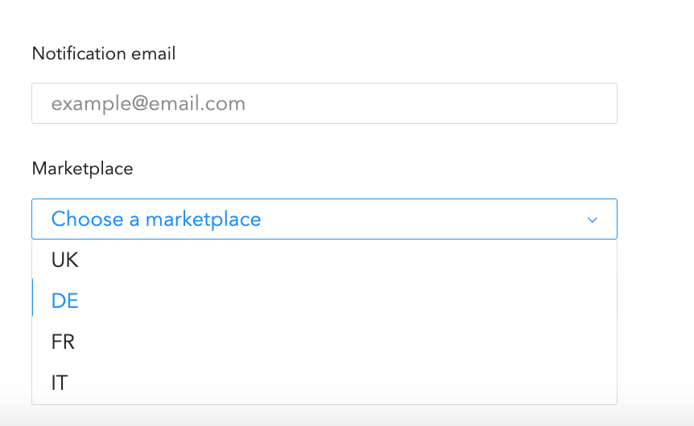
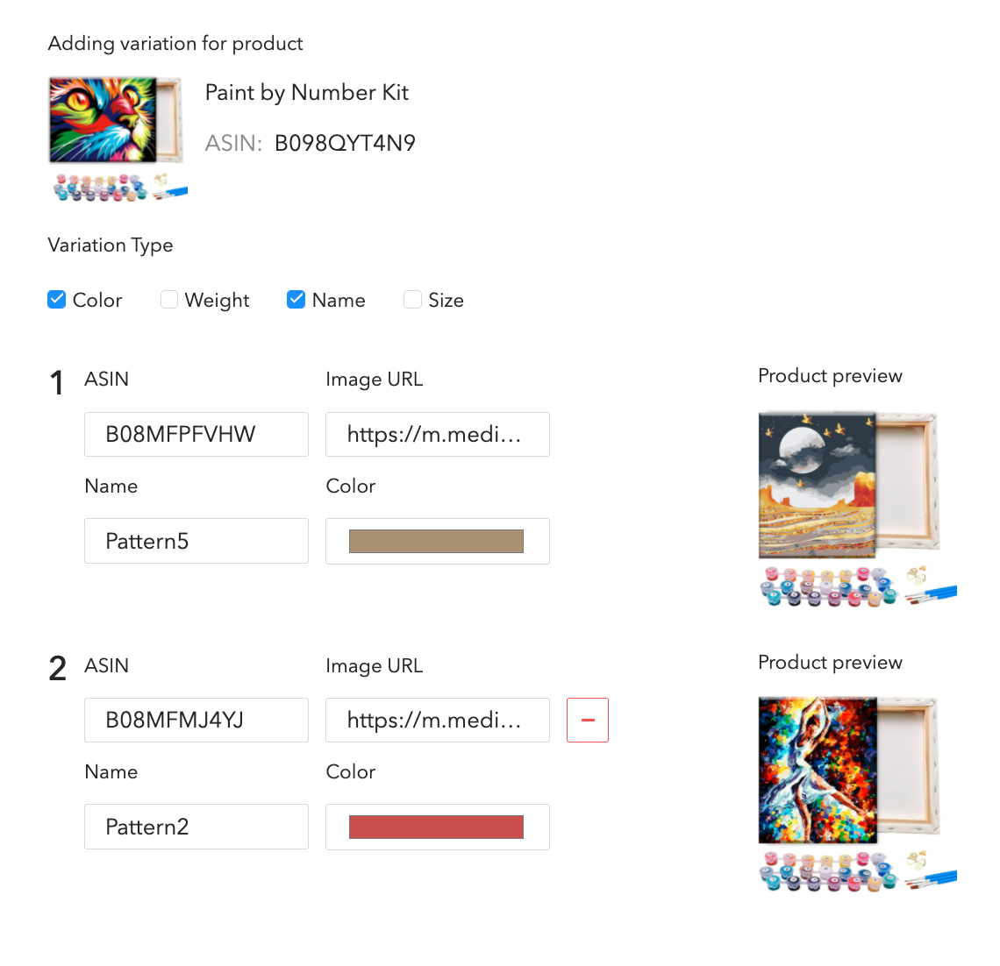
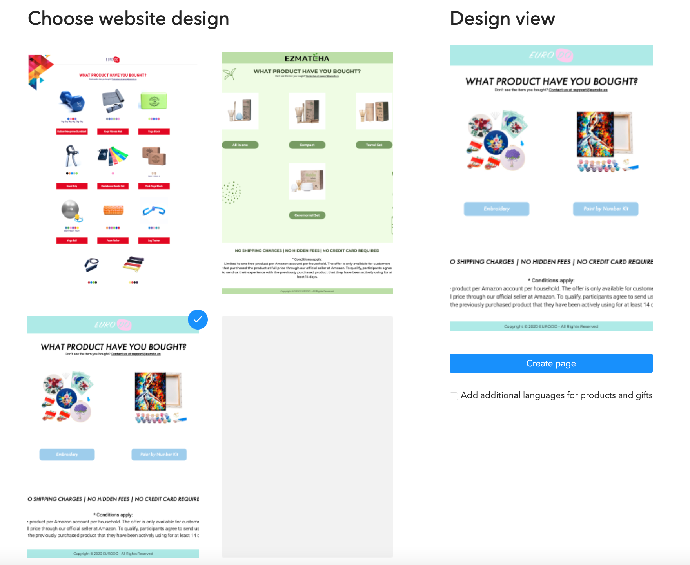
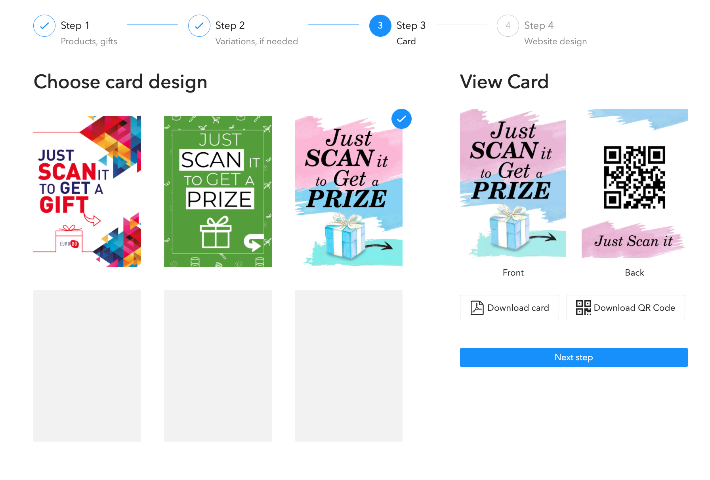

В выпадашке вы можете любой домен на котором будет создан ваш отзовник в ссылке вы можете указать любое значение например наименование вашего товра, компании и тому подобное.
В товарах нужно вести данные о вашем продукте. Если у Вашего продукта есть вариация по цвету/названию/модели/весе то укажите Asin вариации и поставьте галочку на чекбоксе “Вариация” и на втором шаге уже укажите подробные данные о каждом чайлде.
Если у вашего товара нет вариации, то просто укажите данные товара.
Укажите данные подарков, которые вы готовы выслать вашему покупателю. Принцип заполнения данных такой же как и на подарках.Поле Asin - необязателено.
Меил указывается для отправления заявок на подарки, также заявки будут отображаться в “Отчетах”
Маркетплейс указывается для перебрасывания покупателя в его личный кабинет амазона. также маркетплейс указывается для формы, куда вы можете отправить подарок.
На этом этапе нужно ввести инвормацию и чайлдов, указав тип вариации и подробные данные. Наименование товара обязательно так, как по этому значению будет выводиться на кнопку под картинкой товара. цвет/вес/размер выводятся под картинкой вариации
Также как и у товаров Asin yt обязателен. Он будет приходит в отчеты и указан
На выбор даются 3 дизайна карточек, которые вы можете скачать с qr кодом на ваш отзовник
Выберите стиль который хотите для вашего отзовника и нажмите “Создать страничку”
